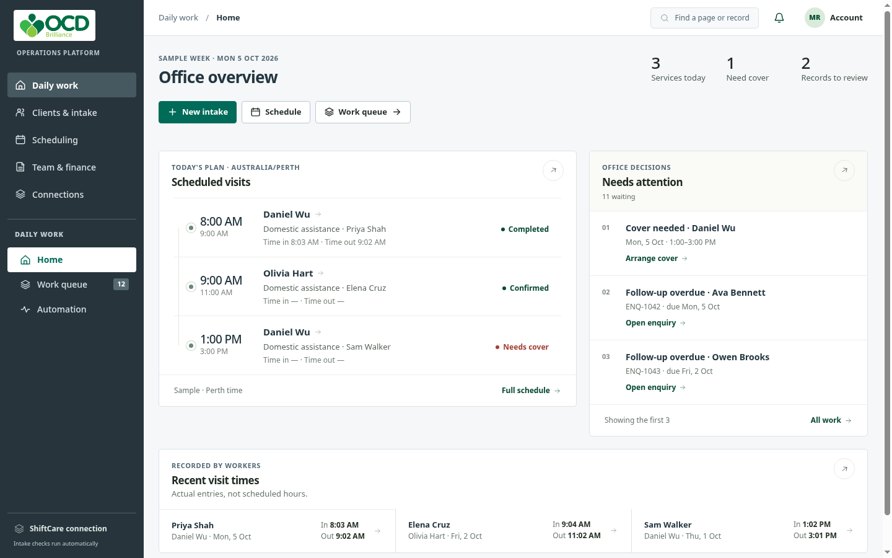
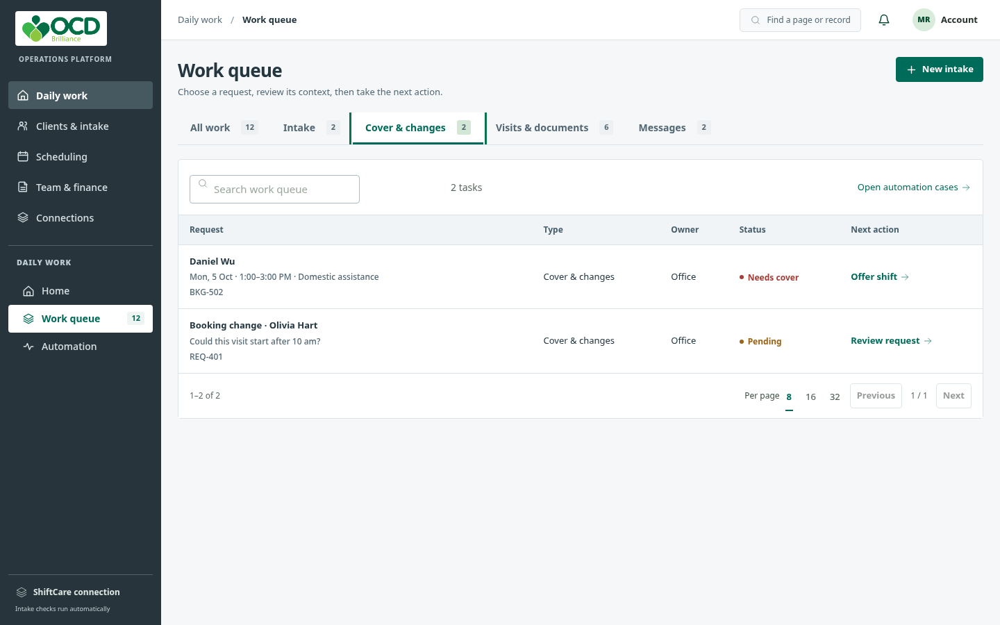
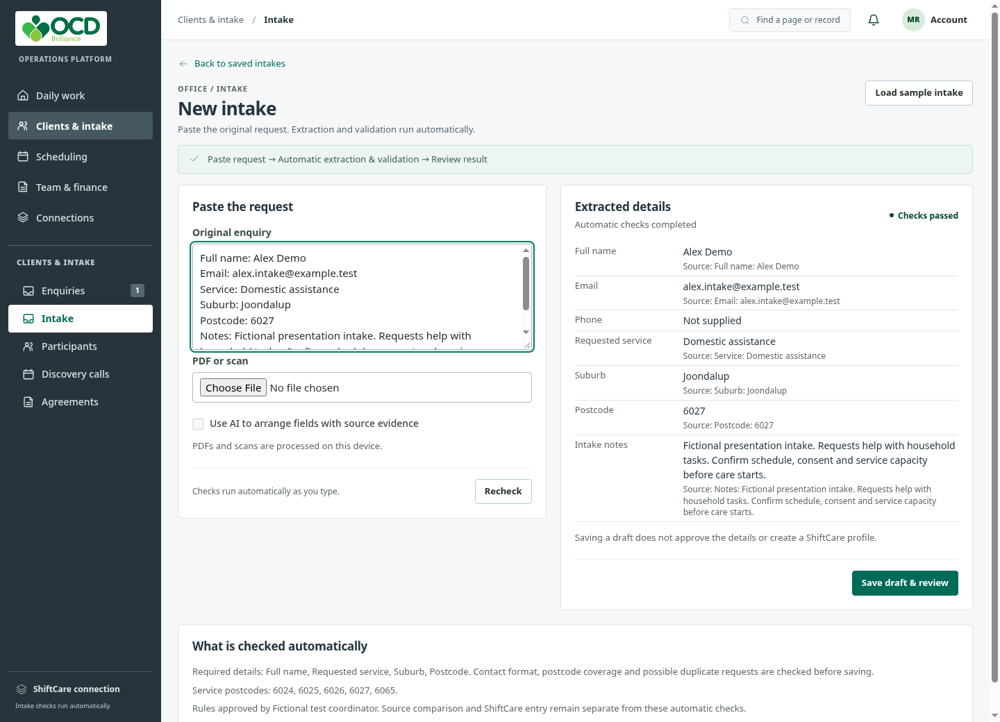
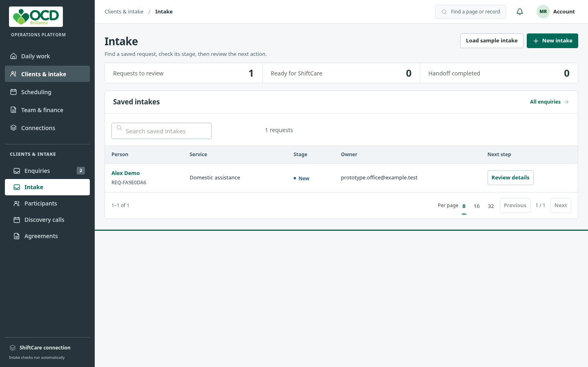
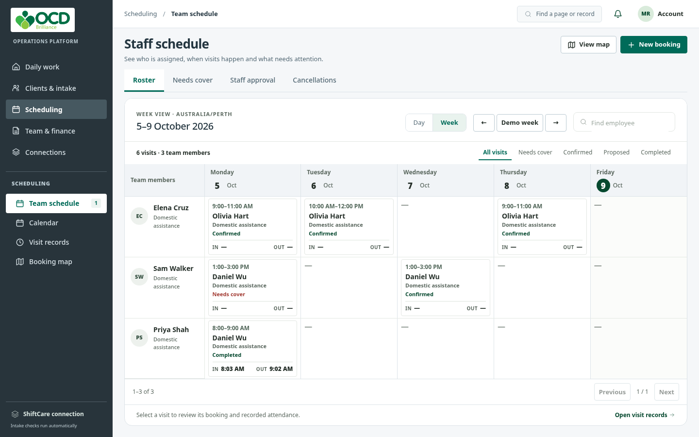
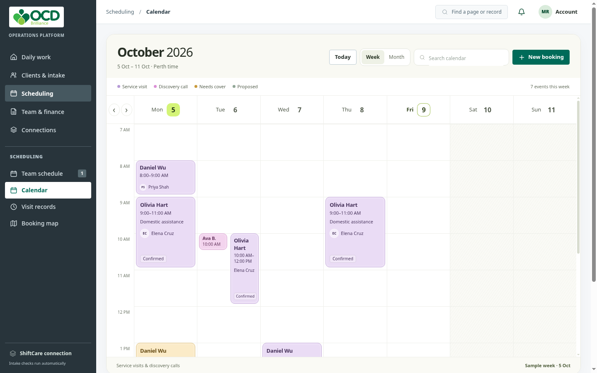
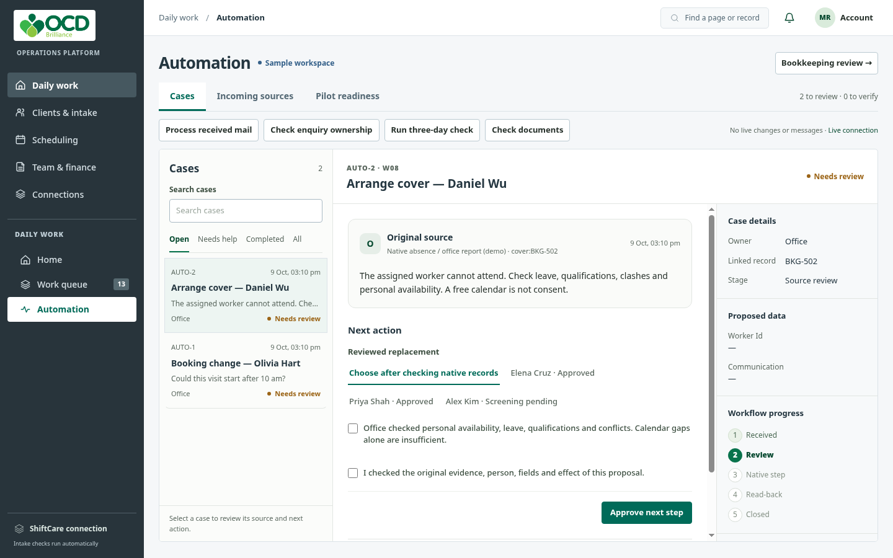

OCD BRILLIANCE / OPERATIONS WORKSPACE
OCD Brilliance
A clearer path from enquiry to daily care
Operations workspace walkthrough · 9 October 2026
10 minutes · Fictional demonstration records
OCD BRILLIANCE / OPERATIONS WORKSPACE
Start with today’s priorities
See planned visits and work needing an office decision.

Home → Scheduled visits / Needs attention
OCD BRILLIANCE / OPERATIONS WORKSPACE
Give each task a clear next step
Read the request, understand its status, then take the labelled action.

Work queue → Cover & changes
OCD BRILLIANCE / OPERATIONS WORKSPACE
Extract and validate intake automatically
Paste a request. Review the extracted fields alongside their source evidence.

Intake → New intake → Load sample intake
OCD BRILLIANCE / OPERATIONS WORKSPACE
Keep the handoff visible
Saved requests show their stage, owner and next action.

Intake → Review details
OCD BRILLIANCE / OPERATIONS WORKSPACE
Read the week by team member
Compare assignments and distinguish scheduled hours from recorded attendance.

Team schedule → Roster · 12-hour times · Australia/Perth
OCD BRILLIANCE / OPERATIONS WORKSPACE
Read the week by time
Find when visits happen, then open the booking for its details.

Calendar → Week · Sample week: 5–11 October 2026
OCD BRILLIANCE / OPERATIONS WORKSPACE
Review automation in context
Case list → original source → next action → outcome and history.

Automation → Cases · Source review and approval remain visible
OCD BRILLIANCE / OPERATIONS WORKSPACE
Agree the next step
Validate the workflow with OCD staff before expanding live integrations.
Working demonstration: automatic intake checks and navigable sample workflows.
ShiftCare handoff: staff create or match the native record and record its ID.
Next: confirm intake rules, test real examples and verify each integration.